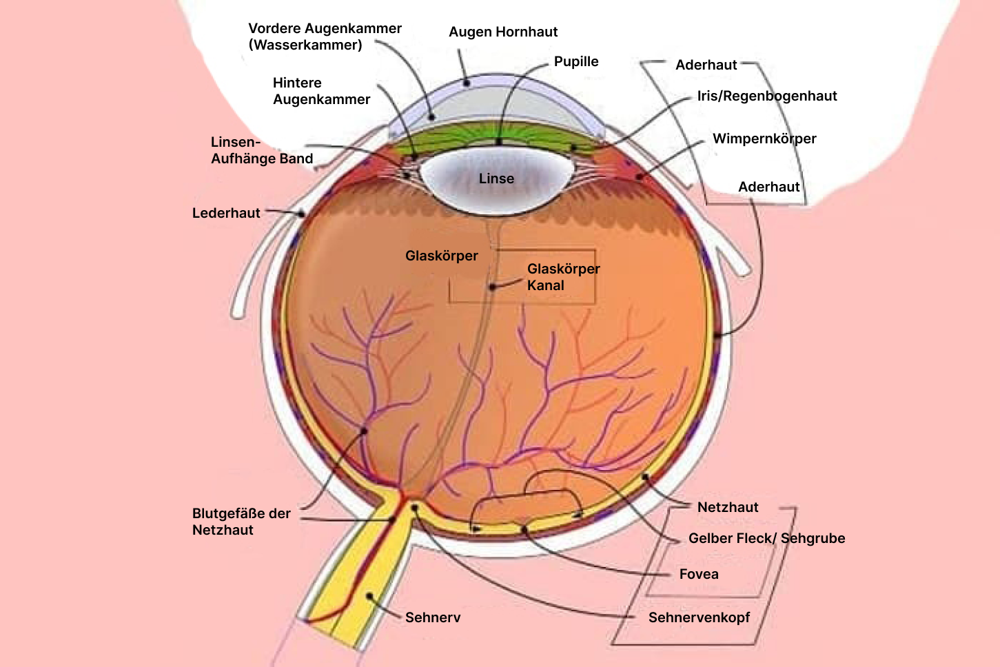

«Sie sorgen sich mehr um das Geld, als um unsere Gesundheit». Die Angelegenheit der Augenklinik wird immer undurchsichtiger!
Die Klinik wird der unvollständigen Durchführung von therapeutischen oder chirurgischen Eingriffen verdächtigt.
Sobald die Insider diese Informationen teilten, veröffentlichte die Klinik einen offenen Brief, in dem sie die Insider der Verleumdung und den Wunsch, mit dem Verkauf unzuverlässiger Daten Geld zu verdienen, beschuldigte.
Insider behaupten, die Klinik habe die Dienstleistungen nicht in vollem Umfang erbracht, sondern nur den Betrag für den vollen Umfang in Rechnung gestellt. Sie berichteten auch, dass die Klinik jegliche Hilfe von Dritten behindert habe. Es wurde absurd, als ein natürliches Nahrungsergänzungsmittel verboten wurde, das bei der Behandlung von Sehstörungen helfen kann.
"Derzeit arbeiten einige Augenkliniken nur aus Gewinngründen. In erster Linie sind sie daran interessiert, wie viel Geld Sie dem Patienten entlocken können. Echte Hilfe rückt in den Hintergrund."Dr. Scholz, Augenarzt.
Die Patienten vertrauen der Klinik und befolgen alle Anweisungen, selbst die unsinnigsten. Glücklicherweise wurde dieses Mal eine ähnliche Vorgehensweise öffentlich gemacht. Dies veranlasste uns, mehr über das Mittel zu erfahren, das den Skandal ausgelöst hat.
In der heutigen Reportage werden wir mit Dr. Scholz sprechen, der die wichtigsten Fragen beantworten wird.
Reporter: Dr. Scholz, erzählen Sie uns, warum haben Sie sich für das Spezialgebiet der Augenheilkunde entschieden ?
Dr. Scholz:Die Sehkraft - eines der wertvollsten Sinne. Dank ihm nimmt eine Person ungefähr 80 % aller Informationen der Welt um sich herum wahr. Es ist unmöglich, die Rolle des Sehens zu überschätzen.
«Unsere Augen sind ein Spiegel der Seele und wenn wir die Funktion dieses Sinnesorgans verlieren, verlieren wir einen wichtigen Teil unseres Lebens».
Meistens treten Sehprobleme langsam auf und es ist am besten, sie am Anfang abzufangen. Der beste Weg, um die Gesundheit der Augen zu erhalten - den Augenkrankheiten vorzubeugen und im Falle der ersten Symptome, zu einem Augenarzt zu gehen.
Reporter:Man sagt, dass Sie von Ihrer Frau auf einen so langen Berufsweg gedrängt wurden?
Dr. Scholz:Richtig. Medizin - eine komplexe Wissenschaft und manchmal war ich nahe dran aufzugeben. Aber meine Frau hat immer an mich geglaubt und ich bin ihr dankbar für ihre Unterstützung. Ihre Sehkraft begann zu früh, sich zu verschlechtern und ich träumte davon, einen Weg zu finden, ihr zu helfen. Ich habe die Struktur des Auges bis ins kleinste Detail untersucht und mich in die Etymologie der Blindheit vertieft. Die Themen meiner ersten Forschung waren, die Ursachen und Mechanismen einer Sehbehinderung in einem frühen Alter. Ich wollte wirklich verstehen, warum meine Frau mit 30 Jahren anfing zu erblinden.
Foto: Dr. Scholz auf der Konferenz.
Ich habe Konferenzen, Symposien und runde Tische besucht, zuerst als Zuhörer und später als Sprecher. Mir ist es gelungen, mit bekannten Augenärzten, Professoren und Augenchirurgen zu diskutieren. Ja, ich habe einen langen Weg zurückgelegt.
Reporter: Warum haben Sie sich dafür entschieden, sich zu dem Skandal in der Augenklinik zu äußern?
Dr. Scholz: Oh, das betrifft auch direkt meine Frau. Gemeinsam haben wir verschiedene Behandlungsmethoden ausprobiert, aber es war immer so, als ob das letzte Puzzleteil fehlte, um die maximale Wirkung und den maximalen Nutzen zu erzielen. Auf einer Konferenz sprach ein junger Wissenschaftler über die Perspektive der Verwendung von Pflanzenextrakten bei Sehproblemen. Ich interessierte mich lebhaft für dieses Thema und begann, alle verfügbaren Informationen zu studieren. Einschließlich der bereits auf natürlicher Basis existierenden Mittel. Ich denke, Sie haben bereits verstanden, dass eines dieser Mittel, war, der Grund für den Skandal, der die Unehrlichkeit der Klinik offenbarte.
Foto: Schema der inneren Struktur des Auges.
Dr. Scholz: Dafür muß ich mehr, über jeden einzelnen Inhaltsstoff berichten… Sie wurden in besonderer Weise extrahiert und kombiniert, um eine hochwirksame Formel zur Erhaltung der Gesundheit der Augen, zur Stärkung der Netzhaut und zur Verbesserung der Durchblutung zu bekommen. Das Gewebe der Augen ist sehr wichtig, um eine ausreichende Versorgung zu erhalten. Ohne diese leidet das Sehvermögen in erster Linie. enthält neben Vitaminen und Mineralstoffen auch pflanzliche Inhaltsstoffe:
Heidelbeerextrakt und Holunderextrakt
- Schützt die Netzhaut vor verschiedenen äußeren Einflüssen
- Schützt die Augen und unterstützt die Sehkraft
- Verbesserung der Mikrozirkulation und Aufrechterhaltung der Netzhautfunktion
Kiefernrinden- und Traubenkernextrakte
- Helfen, die Gesundheit der Augen durch Antioxidative, wirkt entzündungshemmend, stabilisiert das Kollagen und schützt die Blutgefäße.
- Helfen, das Sehvermögen zu verbessern und die Blutgefäße hinter den Augen zu stärken
- Enthalten Vitamin A, das die Gesundheit der Schleimhaut und der Hornhaut des Auges verbessern kann.
Augentrost-Extrakt und Ingwerextrakt
- Senken den Blutzuckerspiegel, was das Auftreten einer diabetischen Retinopathie verhindern kann.
- Reduzieren die Aktivität der Glukoseproduktion aus nicht-kohlenhydrathaltigen Verbindungen, wie Pyruvat und Laktat.
- Stimulieren die phagozytische Fähigkeit der weißen Blutkörperchen und erhöhen dadurch die Immunität.
kann bei einer Vielzahl von Krankheiten eingenommen werden:
- Kurzsichtigkeit und Weitsichtigkeit;
- Läsion des Sehnervs;
- entzündliche Erkrankungen;
- Netzhaut Pathologien;
- Astigmatismus;
- Katarakt;
wurde, im Zentrum für die Erforschung von Augenkrankheiten, klinisch getestet, an dem 2.576 Freiwillige teilnahmen. Diese Studie zeigte keine signifikanten Nebenwirkungen, außer vielleicht einzelnen allergischen Reaktionen und individueller Empfindlichkeit gegenüber den Inhaltsstoffen ― aber das kann bei jedem Mittel vorkommen
TESTERGEBNISSE:
Die Wirksamkeit von wurde nach einer Standardmethode berechnet (das Verhältnis der Anzahl der Personen mit Verbesserungen zu der Gesamtzahl der Freiwilligen).
1. Unterstützung der Sehschärfe
2. Reduziertes Risiko für Augenkrankheiten
3. Verringerung der Auswirkungen von freien Radikalen
4. Linderung der Symptome
5. Versorgung der Augengewebe
Reporter: Doktor, gibt es noch etwas, das Sie unseren Lesern sagen möchten, bevor Sie dieses Interview beenden?
Dr. Scholz:Passen Sie auf Ihre Gesundheit auf. Früher oder später werden die Sehprobleme jeden von uns einholen und es ist besser, wenn dies so spät wie möglich geschieht. Und dafür muss der Vorbeugung und Früherkennung besondere Bedeutung beigemessen werden.
Reporter:Danke für die Antworten, Dr. Scholz!
Warten Sie nicht auf das Fortschreiten der Krankheit, achten Sie jetzt auf die Sehkraft!
Kommentare
Traum
Meine Schwester erzählte mir von , als sie erfuhr, dass ich Sehprobleme hatte. Manchmal wurde das Bild etwas unscharf, die Augen wurden schnell müde. Aber jetzt nehme ich schon seit geraumer Zeit die Kapseln, ich kann sagen, dass sich das Sehvermögen nach ein paar Monaten stabilisiert hat.
Gefällt mir - Antworten - 147 -
Diamant
Ich habe die Packungen gleich für 3 Kuren bestellt! In den letzten Wochen habe ich auch ein verschwommenes Sehvermögen, hoffentlich hilft das Nahrungsergänzungsmittel, meine Augen zu heilen!
Gefällt mir - Antworten - 132 -
MaryPoppins
Meine Augen juckten und tränten schon länger, aber dank wurde es viel besser. Ich nehme es jeden Tag regelmäßig. Jetzt überrede ich meinen Mann, es zu versuchen, da sich vor kurzem seine Sehkraft anfing, zu verschlechtern und ich denke, dass dies auch ihm helfen wird.
Gefällt mir - Antworten - 163 -
Anna
Ich nehme nur seit ein paar Wochen! Ich fühle schön die Veränderung zum Besseren!
Gefällt mir - Antworten - 112 -
Schwarzer Umhang
Ein Wundermittel! Wunderdoktor! Vor ein paar Monaten habe ich meiner Frau gekauft, sie hat endlich aufgehört, sich über ihr Sehvermögen zu beschweren! Ich empfehle es jedem von ganzem Herzen!
Gefällt mir - Antworten - 117 -
Hello_Kitty
Ich nehme dieses Mittel seit einigen Monaten und mein Augenarzt hat mir gesagt, dass meine Augen viel gesünder geworden sind. Ich sehe die Vorteile, also werde ich auch weiterhin nehmen. ? 😊
Gefällt mir - Antworten - 102 -
Sara
Ich nehme seit zwei Monaten. Ich arbeite viel am Computer, am Ende des Tages werden meine Augen müde und sehr rot. Ich kann sagen, dass die Augen jetzt viel weniger müde werden und mein Sohn hat aufgehört zu scherzen, dass ich Marihuana geraucht habe!
Gefällt mir - Antworten - 125 -
Graf von Monte Cristo
Ich wurde kürzlich einer Kataraktoperation unterzogen. Ich war in der postoperativen Phase sehr besorgt, also fing ich an, im Voraus zu nehmen und fuhr nach der Operation fort. Jetzt fühle ich mich gut, ich beschwere mich nicht über die Sehkraft.
Gefällt mir - Antworten - 154 -
Lilli
Zu Beginn der Aktion habe ich bestellt, ich nehme es seit ein paar Tagen. Die Frist ist recht kurz, aber es gibt nichts, worüber man sich beklagen kann. Der Preis ist auch erschwinglich! Danke für die Entdeckung!
Gefällt mir - Antworten - 128 -